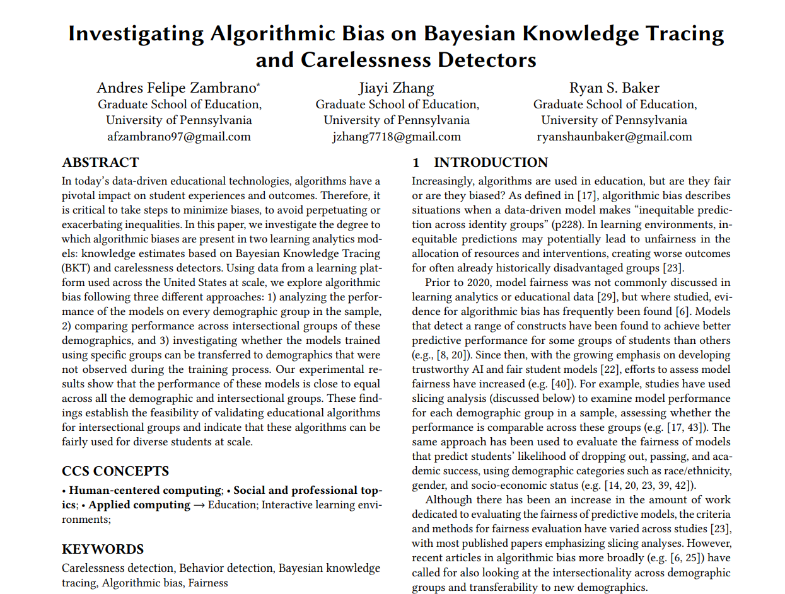

Intro to BKT
TM Module 1: Case Study
1. PREPARE
Our first KT case study is guided by the work of Zambrano, Zhang, and Baker (2024), which analyzed the performance of the BKT model and carelessness detector on every demographic group in the sample.
Our primary aim for this case study is to gain some hands-on experience with essential Python packages and functions for Bayesian Knowledge Tracing. We learn how to do the data wrangling, fiting the model, and analyze the goodness of the model. The paper utilized brute-force grid(Java) search to fit the BKT model but we will use Python here. Specifically, this case study will cover the following topics pertaining to each data-intensive
Prepare: Prior to analysis, we’ll look at the context from which our data came, formulate some research questions, and get introduced the {pandas}, {sklearn}, and {pyBKT} packages for data wrangling and analyzing BKT model.
Wrangle: In the wrangling section of our case study, we will learn some basic techniques for manipulating, cleaning, and transforming the raw BKT data.
Explore: With our BKT data tidied, we learn to measure what relevant knowledge components a student knows at a specific timem
Model: We conclude our analysis by fitting the BKT model for all the demographic group and see what are the best parameters for our current data set.
Analysis: We compare the performance of the BKT model across all demographic groups
1a. Review the Research

Abstract
In today’s data-driven educational technologies, algorithms have a pivotal impact on student experiences and outcomes. Therefore, it is critical to take steps to minimize biases, to avoid perpetuating or exacerbating inequalities. In this paper, we investigate the degree to which algorithmic biases are present in two learning analytics models: knowledge estimates based on Bayesian Knowledge Tracing (BKT) and carelessness detectors. Using data from a learning platform used across the United States at scale, we explore algorithmic bias following three different approaches: 1) analyzing the performance of the models on every demographic group in the sample, 2) comparing performance across intersectional groups of these demographics, and 3) investigating whether the models trained using specific groups can be transferred to demographics that were not observed during the training process. Our experimental results show that the performance of these models is close to equal across all the demographic and intersectional groups. These findings establish the feasibility of validating educational algorithms for intersectional groups and indicate that these algorithms can be fairly used for diverse students at scale.
Research Questions
The central goal of this research is to
investigate the degree to which algorithmic biases are present in two learning analytics models: Bayesian Knowledge Tracing (BKT) and carelessness detectors.
We will focus on BKT part in the following activities. Specifically, we will fit a BKT model and analyze its performance on each demographic groups in the Dataset.
Data Collection
In this study, we examine data from 5,856 students enrolled in 12 middle and high schools in a district in a small city in the northeastern United States. These students engaged with Carnegie Learning’s MATHia software Ritter et al. (2007) for mathematics instruction during the academic years 2021-2022. MATHia is an Intelligent Tutoring System (ITS) used by over 600,000 students in thousands of schools every year. The content within MATHia is structured into “workspaces,” which consist of multi-step problems. Students advance by working through these pre-determined sequences of content. This system is closely aligned to the use of the BKT algorithm; BKT has been used within this system for well over two decades, and content has been adjusted to improve BKT fit (for example, by modifying items less well predicted by BKT). The collected data includes students’ interactions with the software (averaging 8124 actions over 433 problems and 1425 problem steps solved per student), as well as demographic data provided by the school district. The district demographic data covers standard categories such as age, gender, race/ethnicity (i.e., African American, Asian, Hispanic, White, Native American, Native Hawaiian and Pacific Islander, and Multi-race non-Hispanic), whether the student has special needs, is an English learner, or is economically disadvantaged. The demographic distributions are detailed in Table
Analyses
For each of the demographics and intersections previously outlined, we calculate the knowledge estimates of each particular skill that students in this dataset practiced using Bayesian Knowledge Tracing (BKT; Corbett and Anderson (1994)). The parameters for the BKT models for each skill were fitted using brute-force grid search Baker et al. (2010), as in that previous work. To avoid model degeneracy and ensure that the parameter values align with the model’s conceptual meaning (such as a higher likelihood that students will correctly answer if they have already mastered the skill), we adopted the common practice of setting upper limits of 0.3 and 0.1 for the ’Guess’ and ’Slip’ parameters, respectively Baker, Corbett, and Aleven (2008) Baker et al. (2010). The parameters of these BKT models are not designed to inherently favor or disfavor any demographic group. They are built solely using students’ initial responses to each problem (correct or incorrect) without directly considering demographic characteristics Kusner et al. (2017).
Key Findings
As reported by Zambrano, Zhang, and Baker (2024) in their findings section:
We found evidence that performance was close to equal across demographic groups, for these models, including intersectional categories, and tests where we held out entire demographic groups during model training (a test of model applicability to entirely new demographic groups), for carelessness.